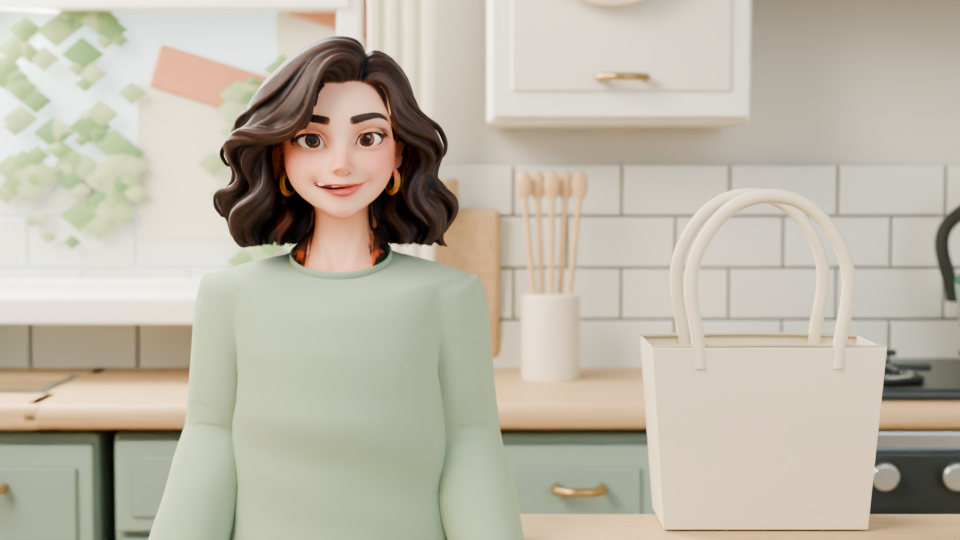
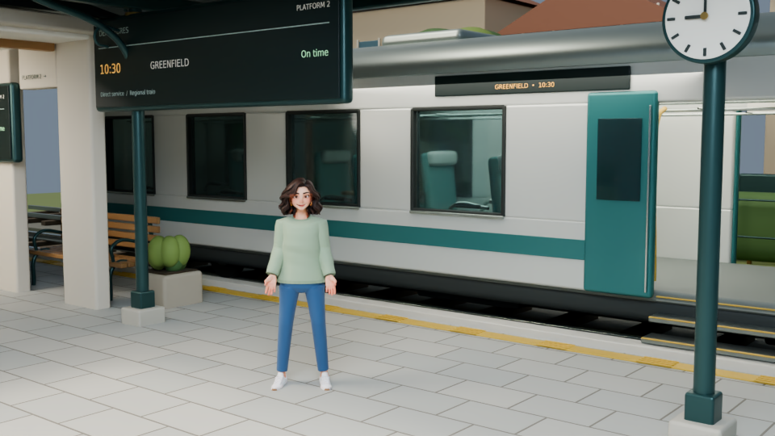
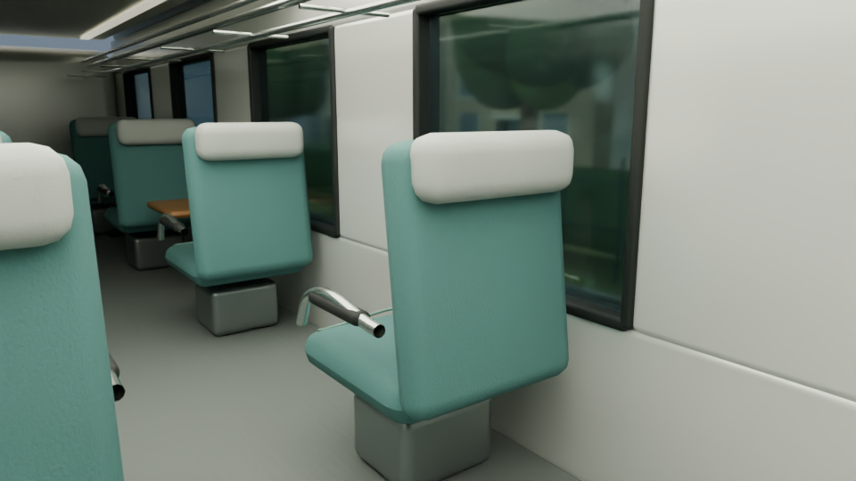
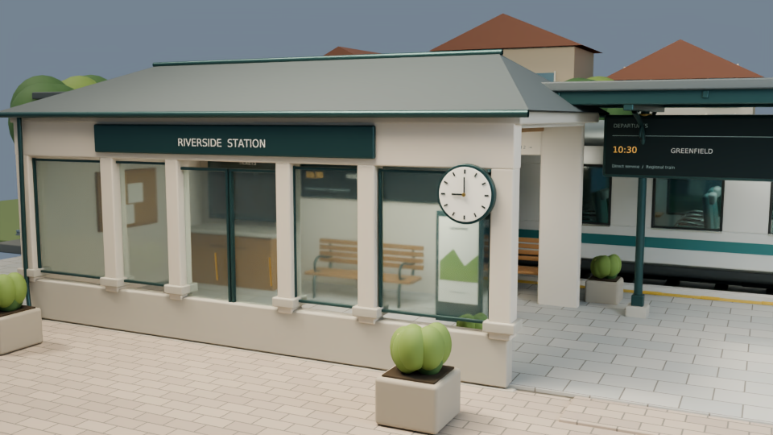

Preview archive
V2 preview pack
The speaking preview, scene studies, and review files.
Download ZIPVersion 2 · A work in progress
A morning at home. A journey to Greenfield. A fresh visual direction for a 55-second English story.
Spoken line “Good morning! Today, I am taking the train.”
Scene studies
Open any image to see the full-size scene.

01At home
Lily, the sage wardrobe, and warm morning light.

02On the platform
The 10:30 train to Greenfield.

03Inside the train
A quieter view of seats, windows, and the journey ahead.

04The station exterior
The setting for the next part of Lily’s story.
Keep exploring
Editable projects for Blender 4.3 or newer.
The speaking preview, scene studies, and review files.
Download ZIPCharacter, wardrobe, props, and the railway settings.
Download .blendThe short facial and head-motion study.
Download .blend